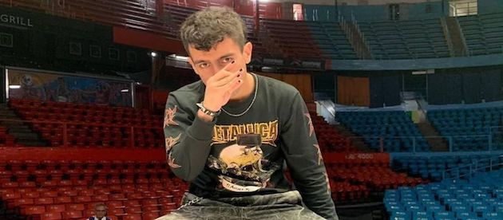

Teorema: ¿qué pasará con 'Teo' tras ser acusado de abuso sexual por expareja Ámbar?
¿Qué dice el Código Penal de Chile sobre el abuso sexual en el país? ¿Cuál es el destino de Teorema? ¿Irá a la cárcel? ¿Se retira de las batallas? Todas las respuestas a continuación.

Teorema en una batalla de rap
La noticia de que Mateo Elicura Cervera Machuca, conocido mundialmente como Teorema o ‘Teo’, ha sido denunciado por su expareja de haberla abusado sexualmente ha paralizado al mundo del freestyle de habla hispana. Sobre todo, en esta parte del continente, donde Teorema era querido y reconocido por su forma de improvisar y rimar.
‘Teo’ es el máximo representante del freestyle de Chile, campeón de la Red Bull Batalla de los Gallos 2019 y era uno de los favoritos para llevarse el título de la Freestyle Master Series (FMS) de su país. Sin embargo, Mateo Cervera fue denunciado por Ámbar Luna Cárdenas, su expareja, por lo que su futuro en el mundo de las batallas es aún incierto.
Lo que el mismo Teorema ha dicho, luego de aceptar que efectivamente violentó a Ámbar, es que se retirará por un tiempo de la vida pública, al mismo tiempo que buscará ayuda para superar todo lo que él mismo ha ocasionado.